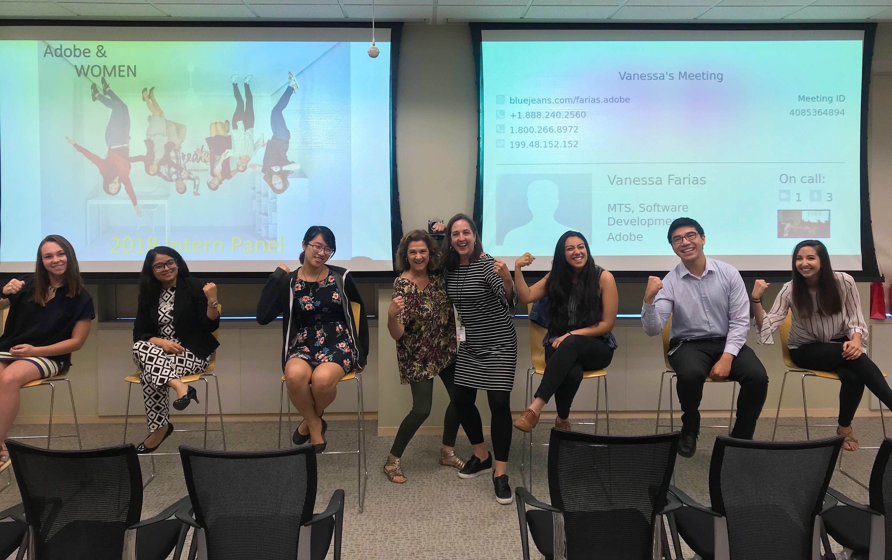

I am a student at Barnard College, Columbia University studying computer science and Asian and Middle Eastern Cultures. I'm professionally interested in using technology to better understand and improve health and medicine and I'm personally passionate about promoting women in STEM and entrepreneurship. Additionally, I am classically trained in ballet and I love dancing and exploring new styles of dance.
On campus, I am an Executive Board Member of the student group Columbia Organization of Rising Entrepreneurs (CORE) and I am a dancer with Columbia University Ballet Ensemble (CUBE) and Orchesis.
Experience
Computer Science Internship at Adobe Systems | 2018
As a Computer Scientist intern at Adobe's headquarters in San Jose, I worked on a Digital Marketing team researching trends in image metadata information and developing an app to process image metadata from users' photo library to highlight significant images.
I also became involved in the community by serving as a mentor for the Girls Who Code Program hosted at Adobe and by speaking on the Women at Adobe's Intern Panel, reflecting on my internship experience and sharing advice for younger students who hope to pursue a career in tech or are interested in Computer Science.

Data Science Internship at IBM | 2017
Interning in the Global Chief Data Office of IBM at the North Castle headquarters provided me with the opportunity to work on a number of projects. I trained a machine learning model in Watson Knowledge Studio to annotate documents and I created an entity type system for internal business and financial metadata vocabulary to enhance this model.
I also leveraged NodeRED to developed a UI for Subject Matter Experts to verify the output of the machine learning model, and I created a dashboard to display metrics for the progress of the project.
Research on Systemic Lupus Erythematosus and Smoke Exposure | 2015
Working at the Medical University of South Carolina, I investigated the gene x environment interaction between single nucleotide polymorphisms in the gene ITGAM and passive childhood smoke exposure in a population of women with systemic lupus erythematosus, using polymorease chain reaction tests.
Projects
ShowerThoughts | 2017
Looking for a new Chrome Extension to brighten your day and make you smile? Download ShowerThoughts, the brainchild of a team of some sleep-deprived developers at a hackathon, and you'll be presented with some philosophical thoughts with an aesthetic background, every time you open a new tab.
Mapping Historic New Castle | 2016
While interning with the New Castle Historical Society, I collected and consolidated data on historical landmarks in New Castle, New York. Using this data, I created an online interactive map , marking over 50 landmarks to increase awareness of local history and the importance of landmark preservation.
Dance
Columbia University Ballet Ensemble | 2018
On campus, I'm a dancer with CUBE, the Columbia University Ballet Ensemble. I've held various board positions within the club and currently serve as the webmaster. Check out our website! We are currently working on our production of Swan Lake. In the past, I've performed in our productions of Coppélia, The Nutcracker, Sleeping Beauty, and Alice in Wonderland.
Orchesis | 2018
Orchesis is another student dance group I perform with. Every semester, our productions are comprised of dances of different styles. Through dancing with Orchesis, I have gotten to explore dancing modern, contemporary, and jazz styles.
"What a Wonderful Kind of Day", Orchesis | Spring 2018